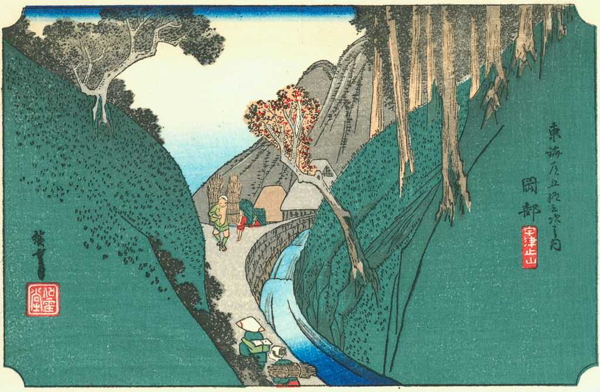
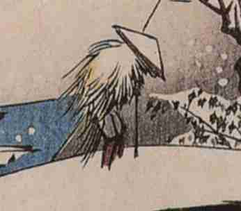

Hiroshige
Crane and Wave (1830s)
Description
Along with Hokusai, Hiroshige is one of the most renowned Japanese artists. With his woodblock prints, or Ukiyo-e, he made a lasting impression on the art world. Even Western painters such as Van Gogh and Monet have been strongly inspired by Hiroshige’s compositions.The Artist
In 1797 the man we know today as Hiroshige was born in Edo (former Tokyo). Already thirteen years after birth, both parents had died and Hiroshige succeeded his father as local fire warden. Because this profession allowed for much leisure time, Hiroshige could become pupil of illustrator Utagawa Toyohiro. 'Hiroshige' combined his own name Shiemon with that of his master Toyohiro.
Post 21 in The Fifty-Three Stations of the Tōkaidō
When Hiroshige was 32 years old, Toyohiro passed away. Four years after master's passing, Hiroshige begot national fame with The Fifty-Three Stations of the Tōkaidō. The series is about Hiroshige’s travels one of the busiest roads at the time. It combines scenes of travelers with rather impressionistic versions of the scenery. So, he shows spectators the land through his eyes. Most agree taht this style separates Hiroshige from Hokusai. This fusion came to signify Hiroshige as it become increasingly more articulated throughout his career.
"Unique fusion of Impressionism ~ Realism"
In Hiroshige's first series and – in fact – his entire corpus of work, the artist tends to combine personal impressions, things that stand out in a harmonic composition.
Hokusai
 Online Museum analysed the feature image of the crane and the wave. We found that the rather peculiar composition and rough state of the crane could suggest a reaction to Hokusai’s famous print The Wave.
On several occasions did Hiroshige connotate cranes with humans, such as in A bridge in a snowy landscape that we can see a part of to the right.
Click here to read how a fourth image solidifies our unique theory.
In sum, it is rather safe to assume Hiroshige did react to the wave because of the striking connections, artists' tendency to react to each other, Hokusai’s contemporary fame and Hiroshige’s declining emphasis on humans (they were portrayed increasingly smaller before often being left out throughout Hiroshige's career).
Legacy
Hiroshige made a clear and strong impact on Western art. To name the most famous example, Dutchman Van Gogh was utterly fascinated with Hiroshige’s work. He owned multiple Hiroshige prints and copied 2 of his works
See their congruity on the website of the Van Gogh museum
Van Gogh wrote that to some extent, all his work is based on Japanese art. Indeed, in Van Gogh’s paintings one could easily discern an influence of what he called Japonaiserie.
As Ansel Adams revealed the beauty of American nature, Hiroshige revealed the beauty of his country and of nature by fusing a tourist's eye with that of an artist. Before the era of photography, Hiroshige could make people learn and awe about nature. As in Ansel's photography we can discern centrality and thoughtful proportions in Hiroshige's imagery. As the crane stands for longevity in Japan, Hiroshige's heritage has recurred up to the present day.
Hiroshige’s deathbed poem: “Leaving the brush behind in Edo, I journey to Paradise to see its famous views”.
Contextualization
Hiroshige lived in a time that Japan’s national identity was a rather paramount theme. The period’s name Sakoku underlines this centrality; it means ‘closed country’. It was a time in which Japan sought to copy and outdo Western art and technology. Although Hiroshige undoubtedly had inherent talent, we could consider his connection with the contemporary times.
The mentioned practice of harmonizing the real with impressions is considered Hiroshige’s way to show the common in refreshing or poetic perspectives. Whereas Hokusai showed national pride through picturesque, ‘perfect’, postal-card like images, Hiroshige expressed the notion of Furusato (birthplace, native place) in this way.
ふるさと
Furusato in Kana script
Overview